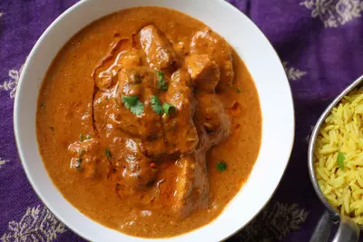

Tikka Masala

Description
A tikka masala sauce from a classic curry-stand recipe. This is not haute cuisine; it's the kind of nuclear-orange tikka masala you crave when you stumble out of a pub at 2 a.m. I make vast quantities of this sauce at one time as it freezes well. I also use more cayenne pepper than 1 teaspoon, but I give out the recipe like this for people who don't like heat.
Ingredients
- 2 tablespoons ghee (clarified butter)
- 1 onion, finely chopped
- 4 cloves garlic, minced
- 1 tablespoon ground cumin
- 1 teaspoon salt, or more to taste (Optional)
- 1 teaspoon ground ginger
Steps
- Heat ghee in a large skillet over medium heat. Add onion; cook and stir until translucent, about 5 minutes. Stir in garlic; cook and stir just until fragrant, about 1 minute. Stir cumin, 1 teaspoon salt, ginger, cayenne pepper, cinnamon, and turmeric into onion mixture; fry until fragrant, about 2 minutes.
- Stir tomato sauce into onion and spice mixture; bring to a boil and reduce heat to low. Simmer sauce for 10 minutes, then mix in cream, 1 tablespoon sugar, and paprika. Bring sauce back to a simmer and cook, stirring often, until sauce is thickened, 10 to 15 minutes.
- Heat vegetable oil in a separate skillet over medium heat. Stir chicken into hot oil; add curry powder. Sear chicken until lightly browned but still pink inside, about 3 minutes; stir often.
- Transfer chicken and any pan juices into sauce. Simmer chicken in sauce until no longer pink, about 30 minutes; adjust sugar and salt to taste.